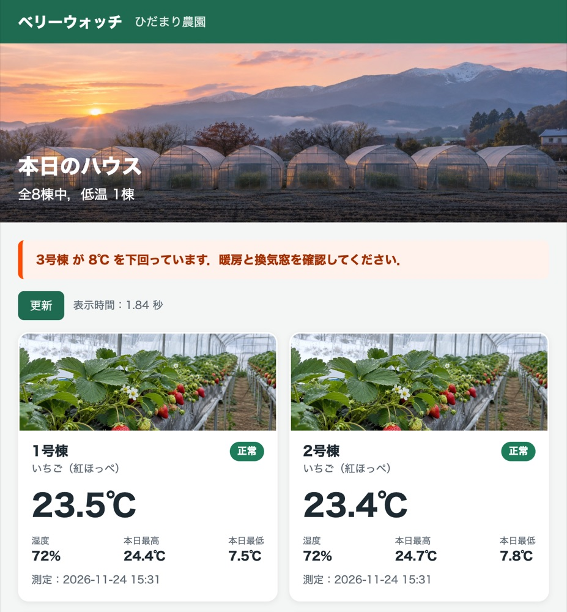
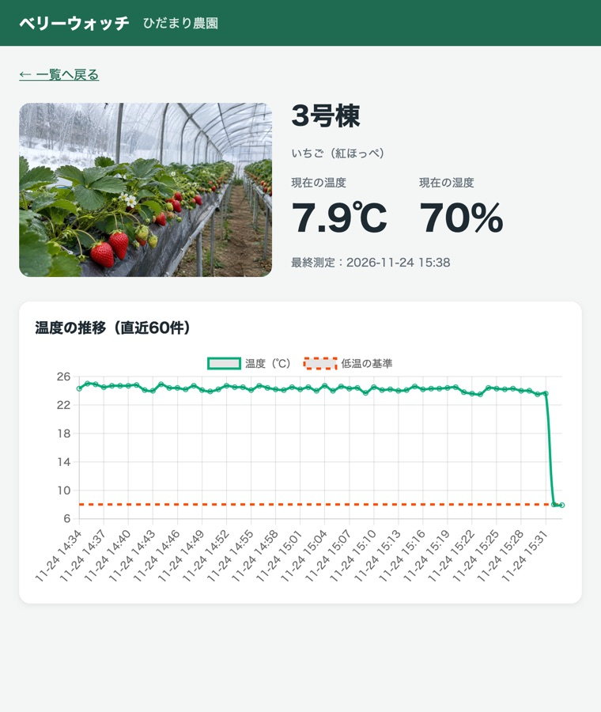

同じアプリなのに，一覧だけ遅い．なぜ？
アプリの起動
VS Codeサーバーもセンサーも，VS Code の下のターミナルで
画面の見本（どこに打つ？）
▸ data
▸ static
app.py
sensor.py
名前@PC名:~/berry-watch$ python3 sensor.py 1号棟：10.2℃，75.3% を送信
bash
下のターミナル：1つ目＝サーバー，2つ目＝センサー（右の一覧で切り替え）
-
Ubuntu で実行 → VS Code が開く
cd ~/berry-watch && code . -
メニュー「ターミナル」→「新しいターミナル」（1つ目＝サーバー）
docker compose up -
ターミナル右上の ＋（2つ目＝センサー）
python3 sensor.py -
ブラウザで localhost:8000
うまくいかないとき
No such file or directory
→ アプリが未取得．第2回の「アプリの取得」から
左下に「WSL: Ubuntu」が出ない
→ VS Code を閉じて，1-1 をもう一度
permission denied（docker）→ メンターと確認
8棟の温度の表示
遅さの再現
VS Code本番のデータは園主のもの．同じ件数の試験データで再現
ターミナルの「＋」→ 3つ目
docker compose exec app python sample_data.py← フォルダを共有
exec＝動いている箱の中で実行．作った記録は house.db へ
「更新」を3回 → 表示時間
表示時間が数秒に
どの要求が遅い？
ブラウザ一覧で F12 → 上部の「ネットワーク」→ アプリの「更新」
todayが8行．右の「時間」を見る
| houses | 5 ms |
| today ×8 | 1回 385 ms |
遅いのは today
記録の数
1日に増える記録は，9月の前と後で何倍？
SQLite Viewer で readings を開くと，下に行の数
見積もりと行の数がほぼ一致
原因：毎回，日記を最初から
VS Code今日の分を探すのに，1年分（約18万件）を毎回全部読む
app.py（today_summary）原因を Issue にコメント
件数の見積もり
問1 記録の数
棟の数・記録の間隔（分）・日数を受け取り，記録の数を出力
8 10 365
420480
ヒント
1日の回数 ＝ 1440 ÷ 間隔．割り算 // は整数の答え
解答例
問2 最初に低温になった時刻（続き）
時刻と温度の記録（古い順）から，最初に 8.0 未満になった時刻を出力．なければ なし
4 05:40 8.6 05:50 8.1 06:00 7.8 06:10 7.5
06:00
ヒント
見つけたら break で for を抜ける
見つかったかどうかを，変数に入れておく
解答例
問1 が全問正解（問2 は続き）
手応えメモ
このブラウザに保存．第11回で並べる
3つとも記入
 第7回 完了
第7回 完了
原因を突き止めた
- 再現と測定
- 遅い要求の特定
- 記録の数の見積もり
終了
各ターミナルで Ctrl + C → VS Code・ブラウザを閉じる